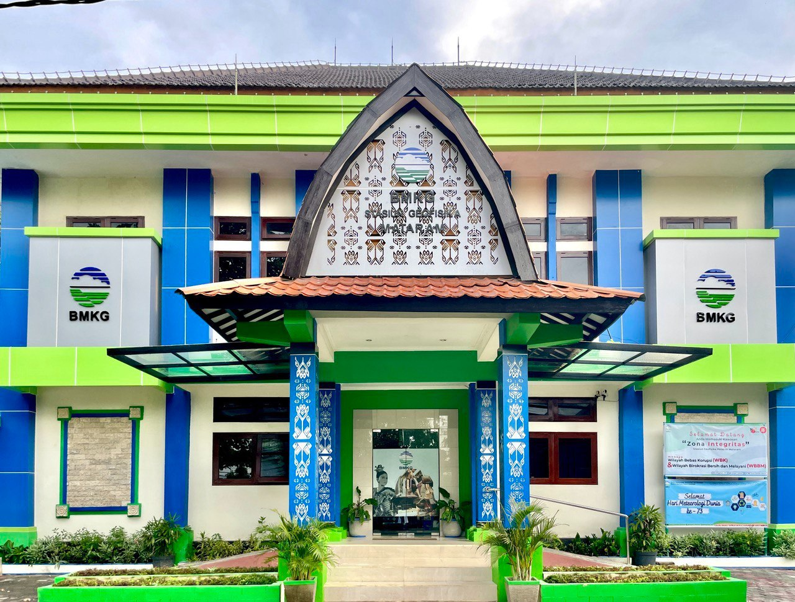

NORMAL
Gempa Bumi
Seismograf Aktif
247 kejadian (30 hari)
Memuat Stasiun Geofisika Mataram...
Teknologi Jamstack untuk Performa Optimal

Jl. Adisucipto No. 10, Rembiga, Kota Mataram, NTB 83115
Official website Stasiun Geofisika Mataram-Provinsi Nusa Tenggara Barat
Informasi terkini dari Stasiun Geofisika Mataram
Seismograf Aktif
Tidak Berpotensi
Medan Normal
NTP Tersinkron
Monitoring Struktur